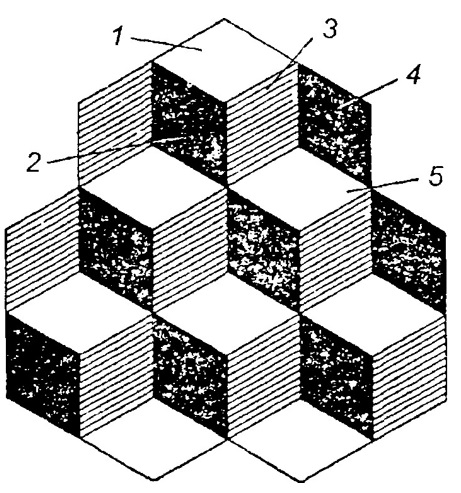
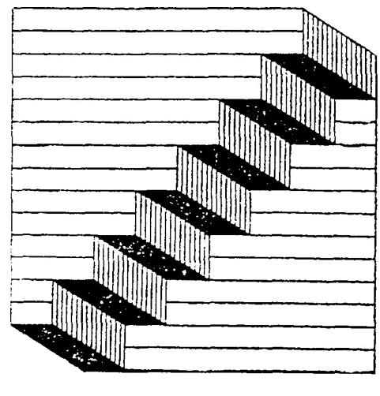

Что такое восприятие.
Виды восприятия.
Основные свойства восприятия.
Индивидуальные особенности восприятия.
Наблюдения и наблюдательность.
Особенности восприятия младших школьников.
Знания об окружающем мире при непосредственном контакте с ним человек получает не только через ощущения, но и через восприятия. И ощущения и восприятия звенья единого процесса чувственного познания. Они неразрывно взаимосвязаны, но имеют и свои отличительные особенности. В результате ощущений человек получает знания об отдельных свойствах, качествах предмета - о его цвете, температуре, вкусе, звучании и пр. Но в реальной жизни мы видим не просто пятна света или цвет, слышим не просто громкие или тихие звуки, ощущаем запах не сам по себе. Мы видим свет солнца или электрической лампы, слышим мелодии музыкального инструмента или голос человека и пр. Восприятие дает целостные образы предметов или явлений, обладающих рядом свойств. В отличие от ощущения при восприятии человек познает не отдельные свойства предметов и явлений, а предметы и явления окружающего мира в целом.
Восприятие - это отражение предметов и явлений, целостных ситуаций объективного мира в совокупности их свойств и частей при непосредственном воздействии их на органы чувств.
В основе восприятия лежат ощущения, но восприятие не сводится к сумме ощущений. Например, мы воспринимаем книгу, а не просто сумму ощущений цвета, формы, объема, шероховатости поверхности предмета.
Без ощущений невозможно восприятие. Однако кроме ощущений, восприятие включает прошлый опыт человека в виде представлений и знаний. Воспринимая, мы не только вьщеляем группу ощущений и объединяем их в целостный образ, но и осмысливаем этот образ, понимаем его, привлекая для этого прошлый опыт. Иначе говоря, восприятие человека невозможно без деятельности памяти и мышления. Большое значение в процессе восприятия имеет речь, называние, т.е. словесное обозначение, предмета.
Как же происходит процесс восприятия? Специальных органов восприятия нет. Материал для восприятия дают уже известные нам анализаторы. Физиологической основой восприятия является комплексная деятельность системы анализаторов. Любой предмет или явление действительности выступает как сложный, комплексный раздражитель. Восприятие есть результат аналитико-синтетической деятельности коры мозга: отдельные возбуждения, ощущения связаны друг с другом, образуя определенную целостную систему.
В зависимости от того, какой анализатор играет в восприятии преобладающую роль, различают зрительные, осязательные, кинестезические, обонятельные и вкусовые восприятия.
Сложные виды восприятия представляют комбинации, сочетание различных видов восприятия.
В отличие от ощущений, образы восприятия возникают обычно в результате работы нескольких анализаторов. К сложным видам восприятий относятся, например, восприятие пространства и восприятие времени. Воспринимая пространство, т.е. удаленность предметов от нас и друг от друга, их форму и величину, человек основывается как на зрительных ощущениях, так и на ощущениях слуховых, кожных и двигательных.
При восприятии времени помимо слуховых и зрительных ощущений большую роль играют ощущения двигательные и внутренние, органические.
По силе звука грома мы определяем расстояние, отделяющее нас от приближающейся грозы, при помощи осязания мы с закрытыми глазами можем определить форму предмета. У людей с нормальным зрением слуховые и осязательные ощущения играют подсобную роль в восприятии пространства. Но эти ощущения приобретают основное значение для лиц, лишенных органа зрения.
Под восприятием времени понимается процесс отражения длительности и последовательности событий, происходящих в объективном мире. Непосредственному восприятию поддаются только очень короткие временные отрезки. Когда же речь идет о более длительных отрезках времени, то правильнее говорить не о восприятии, а о представлении времени. Восприятие времени характеризуется высокой степенью субъективности. Восприятие длительных отрезков времени зависит от того, заполнены ли они какой нибудь деятельностью, а если заполнены, то каков характер этой деятельности. Заполненные положительно эмоционально окрашенными действиями и переживаниями человека отрезки времени воспринимаются как более короткие. Незаполненные же или заполненные отрицательно окрашенными эмоциональными моментами воспринимаются как более длинные. Время, заполненное интересной работой протекает гораздо быстрее, чем то же время, занятое монотонной или скучной деятельностью. Неинтересная лекция, скучные уроки кажутся гораздо длиннее, чем лекция или урок в школе, проведенные выразительно, интересно, пробуждающие живую мысль слушателей. Наиболее коротким нам кажется время, в течение которого надо успеть сделать многое.
Есть люди, которые всегда знают, который сейчас час и могут проснуться в нужное время. У таких людей хорошо развито чувство времени. Чувство времени не врожденное, оно развивается в результате накапливаемого опыта.
Чем богаче жизненный опыт, тем легче ориентироваться во времени, тем легче отрешиться от субъективных элементов в переживании времени.
Воспринимает окружающую действительность не тот или иной орган чувств, а человек определенного пола и возраста, со своими интересами, взглядами, направленностью личности, жизненным опытом и пр. Глаз, ухо, рука и другие органы чувств лишь обеспечивают процесс восприятия. Поэтому восприятие зависит от психических особенностей личности.
Избирательность восприятия. Из огромного числа многообразных воздействий мы с большой отчетливостью и осознанностью выделяем лишь некоторые. То, что находится в центре внимания человека при восприятии называют объектом (предметом) восприятия, а все остальное фоном. Иначе говоря, что-то для человека в данный момент является основным в восприятии, а что-то второстепенным. Предмет и фон динамичны, они могут меняться местами - то, что было объектом восприятия может стать на какое-то время фоном восприятия.
Обратите внимание на изображение (рис. 5 а) полуотвернувшейся молодой женщины. А можете заметить тут же старуху с большим носом и подбородком, спрятанным в воротник?
а)
Свяжите в кубик грани 1, 2, 3, - получите шесть кубиков, а возьмите грани 3, 4, 5 кубиков станет семь (рис. 56). Лестница Шредера даже не двойственное, а тройственное изображение. Если смотреть начиная от левого нижнего угла (рис. 5в), по диагонали вверх, видна лестница. Рассматривая от правого верхнего угла по диагонали вниз, можно увидеть нависающий карниз. Если же пробегать глазами по диагонали слева направо и обратно, можно обнаружить серую полоску бумаги, согнутую гармошкой.
|

б) |

в) |
Рис. 5. Предмет и фон в восприятии:
а) профиль молодой женщины или старухи («жена или теща?»); б) кубики; в) лестница Шредера.
Восприятие всегда избирательно и зависит от апперцепции.
Апперцепция - это зависимость восприятия от общего содержания психической жизни человека, его опыта и знаний, интересов, чувств и определенного отношения к предмету восприятия. Известно, что восприятие картины, мелодии, книги у разных людей отличается своеобразием. Иногда человек воспринимает не то, что есть, а то, что ему хочется. Все виды восприятия осуществляются конкретным, живым человеком. Воспринимая предметы, человек выражает определенное отношение к ним.
Так, младшие школьники лучше замечают ярко-окрашенные предметы, подвижные предметы на фоне неподвижных. Они полнее и лучше воспринимают рисунок, который учитель выполняет при них на доске, чем тот рисунок, показываемый уже в готовом виде. Все, что включено в трудовую учебную, игровую деятельность самого ребенка и тем самым вызывает его активность и повышенный интерес, воспринимается более полно. Разнообразные практические занятия и упражнения ведут к более глубокому восприятию, а следовательно, к познанию предметов и явлений.
Рис. 6. Одновременный контраст. Одна и та же фигура на белов фоне кажется темнее, а на чёрном - светлее
Иллюзии восприятия. Иногда наши органы чувств подводят нас, как бы обманывают. Такие «обманы» органов чувств называют иллюзиями. Поэтому фокусника, секрет работы которого состоит не только в ловкости рук, но и в умении «обмануть» зрение зрителей, называют иллюзионистом.
Зрение поддается иллюзиям больше, чем другие органы чувств. Это нашло отражение и в разговорной речи и в пословицах: «не верь глазам своим», «обман зрения».
На рис. 6 показаны некоторые зрительные иллюзии. Серые прямоугольники одной и той же светлоты кажутся разными на черном и белом фоне: на черном фоне - светлее, чем на белом.
Маленький круг среди больших кажется меньше такого круга среди еще более маленьких (рис. 7). На самом деле они совершенно одинаковы, но кажутся разными, потому что один окружен большими, чем он сам, кружками, а другой - меньшими. Вот эти-то кружки-соседи и создают иллюзию, что кружки разные.
Рис. 7. Круги
В геометрическом чертеже диагональ большого четырехугольника кажется больше диагонали меньшего, хотя объективно обе диагонали равны (рис. 8).
Рис. 8. Иллюзия параллелограмма
Трудно поверить, что оба изображенные на рисунке отрезка одинаковой длины (рис. 9).
Рис. 9. Иллюзия Мюллсра-Лайера
Иллюзии восприятия бывают у всех людей. Покажите эти рисунки любому из ваших знакомых, и у них они вызовут ту же иллюзию, что и у вас.
А вот примеры других зрительных иллюзий.
Если взять два одинаковых кубика и покрасить один белой краской, а другой - черной, то белый кубик будет казаться больше черного. Вообще, все светлые предметы кажутся нам более крупными, чем темные.
А теперь посмотрите на рисунок 9.
Как вы думаете, какая линия длиннее? Кажется, что вторая, но если их измерить линейкой, то выяснится, что они равны. Иллюзию, обман зрения создают стрелки на концах линий. Если бы этих стрелок не было, мы бы сразу увидели, что линии равны.
О зрительных иллюзиях хорошо знают художники, архитекторы, портные. Они используют их в своей работе. Например, портной шьет платье из ткани в полоску. Если он расположит ткань так, чтобы полоски шли вертикально, то женщина в этом платье будет казаться выше ростом. А если «положить» полоски горизонтально, то хозяйка платья покажется ниже и толще.
Иллюзии наблюдаются не только при зрительном, но и при других видах восприятия.
Порой нас обманывают и другие органы чувств. Попробуйте подержать руку в очень холодной воде, а потом опустите ее в теплую. Вам будет казаться, что ваша рука попала чуть ли не в кипяток.
Если съесть кусочек лимона или селедки и запить его чаем с небольшим количеством сахара, то первый глоток покажется очень сладким.
Иногда иллюзии возникают по влиянием сильных эмоций. Например, в страхе человек может принять одну вещь за другую (пень в лесу - за зверя или человека). Такие иллюзии случайны и имеют индивидуальный характер.
Истинность восприятия проверяют практикой.
Восприятие тесно связано с прошлым опытом человека, его прежними восприятиями. В процессе восприятия очень важно узнавание, без него фактически нет восприятия. Воспринимая предмет, мы можем точно назвать его или сказать, что он нам напоминает. Всякое явление в процессе восприятия мы понимаем с точки зрения уже имеющихся знаний, опыта. Это дает возможность включить новое знание в систему уже имеющихся знаний.
Особенности восприятия зависят не только от жизненного опыта, направленности личности, интересов, богатства духовного мира и т.п., но и от индивидуальных особенностей. Какие это особенности?
Люди различаются, во-первых, по характеру приема информации. Ученые выделяют целостный (синтетический) тип воприятия, когда не придают значения деталям и не любят вдаваться в них. Для этого типа характерна ориентированность на суть, смысл, обобщение, а не на детали и частности. Детализирующий (аналитический) тип восприятия, напротив, ориентирован на детали, подробности.
Совершенно очевидно, что наиболее продуктивным является сочетание того и другого способа.
Во-вторых, - по характеру отражения получаемой информации. Здесь различают описательный и объяснительный типы восприятия. Описательный тип ориентирован на фактическую сторону информации: человек отражает и выдает то, что видит и слышит, что читает, максимально приближаясь к исходным данным, часто не вникая в их смысл. Среди школьников такой тип восприятия весьма распространен, отсюда частые просьбы учителя: «Расскажи своими словами».
Объяснительный тип не удовлетворяется тем, что непосредственно дано в самом восприятии. Он старается найти общий смысл информации. Лучше всего - золотая середина. Но не всегда это достигается. Чтобы создать гармонию этих типов восприятия, необходимо знать их особенности, иметь представление об их механизмах, уметь их диагностировать, и на этой основе проводить педагогическую работу.
В-третьих, - по характеру особенностей самой личности. Здесь различают объективный тип восприятия, когда человек ориентирован на точность восприятия, непредвзятость. Можно сказать, что у него сформировался иммунитет к догадкам, предположениям, домыслам и т.д., и субъективный тип, когда восприятие подчинено субъективному отношению к тому, что воспринимается, пристрастной его оценке, сложившимся ранее предвзятым мыслям о нем. Это наиболее часто встречающийся житейский тип восприятия. Вспомните рассказ А.П. Чехова «Хамелеон».
Наблюдение - это восприятие, тесно связанное с деятельностью мышления - сравнением, различением, анализом. Наблюдением называют целенаправленное, планомерное восприятие объектов и явлений, в познании которых мы заинтересованы. Наблюдать - значит не просто смотреть, а рассматривать, не просто слушать, а вслушиваться, прислушиваться, не просто нюхать, а принюхиваться. Это очень точно отражено в народных пословицах и поговорках:
|
И глядит, да не видит. Зряч, да не зорок. У меня на это уши заложены. |
Наблюдение всегда осуществляют с определенной познавательной целью. Оно предполагает ясное представление задач наблюдения и предварительную разработку плана его осуществления. Невозможно наблюдать, если не знать, что конкретно и с какой целью надо наблюдать. Ясность цели и задач наблюдения активизируют важную характеристику восприятия - избирательность.
Человек воспринимает не все. что бросается в глаза, а вычленяет наиболее важное и интересное для себя. Восприятие, внимание, мышление и речь объединяются при наблюдении в единый процесс умственной деятельности. Поэтому наблюдение предполагает большую активность личности и помогает глубже понимать действительность.
Наблюдательность - это свойство личности, умение наблюдать и подмечать характерные, но мало заметные особенности предметов, явлений, людей. Она тесно связана с развитием профессиональных интересов человека, так как совершенствуется в процессе систематических занятий избранным делом.
Умение наблюдать играет огромную роль в самых разнообразных областях человеческой деятельности.
Наблюдательность прекрасно развита у художников, писателей, поэтов.
|
...Иван-да-Марья, зверобой, Ромашка, Иван-чай, татарник, Окутанные ворожбой, Глазеют, обступив кустарник... Пастернак Б. «Тишина» |
Наблюдательность необходима педагогу. Без внимательных постоянных наблюдений невозможно сколько-нибудь глубоко понять психологические особенности ребенка и наметить правильные пути его развития и воспитания.
Высокоразвитая наблюдательность учителя способствует развитию его педагогического такта. Работая с детьми, наблюдательный учитель улавливает едва заметные настроения детей, отклонения от их обычного состояния и строит свои взаимоотношения с ними в соответствии с этими состояниями.
Наблюдательность как личностное профессиональное качество развивается у учителя постепенно, в процессе приобретения опыта педагогической деятельности и приобщения к психологическим знаниям.
Разработаны различные рекомендации и схемы по ведению наблюдений за особенностями психического развития учащихся, предназначенные для учителей. Приведем в качестве примера одну из таких схем.
Существенное значение при работе с картой имеет как можно более полная фиксация наблюдаемого. Основные сложности наблюдения в том, чтобы выделить главное из того, что ты видишь. При этом важно не подменить реально наблюдаемый факт собственной интерпретацией.
Вместе с тем, у педагога как и у всякого специалиста, по роду своей деятельности много общающегося с людьми, множество наблюдений накапливается без специального плана, стихийно. Этот богатый опыт наблюдений за ребенком в разных ситуациях создает основу для того, что называется «педагогической интуицией», позволяет, почти не задумываясь выбрать единственно правильные слова, которые нужны именно этому ученику. Однако, этот опыт часто остается неосмысленным, непродуманным. Его очень трудно передать другому педагогу, иногда даже трудно объяснить самому себе. Для систематизации и осознания таких стихийных наблюдений разрабатываются специальные схемы. Одной из таких схем, предназначенных для заполнения учителем, является «Карта наблюдений» Д. Стотта. Она направлена на выявление различных видов нарушений поведения. Эта карта состоит из описания разных форм поведения, которые педагог может наблюдать у детей. Педагога просят оценить, встречается или нет у ребенка та или иная форма поведения. Концентрация симптомов в какой-либо одной области позволяет понять причины эмоциональных трудностей ребенка, нарушений поведения и т.п.
Приведем в качестве примера одну из частей этой карты.
«Тревога по отношению к взрослым. Беспокойство и неуверенность в том, интересуются ли им взрослые, любят ли его...
Ученикам первого класса дали задачу с так называемыми лишними данными: «Я вошел в магазин в 9 ч утра и пробыл в нем до 10 ч утра. Я купил там 6 м ситца по 1 р. 10 к. за метр и 3 м шелка по 6 р. за метр. В уплату я дал 25 р. Сколько времени я пробыл в магазине?»
Некоторые первоклассники сразу воспринимают существенное в задаче, отношение ее взаимосвязанных величин. Один мальчик после чтения задачи сказал: «А тут легко узнать: десять минус девять (смеется) получится один час. Не понимаю, зачем дано все остальное». Другие дети воспринимают в задаче лишь разрозненные данные, не связанные друг с другом; они стремятся использовать все данные независимого от того, нужно это для решения задачи или нет. Один из учеников так решил задачу: «Сначала узнаем, сколько стоят 6 метров ситца; потом - сколько стоит 3 метра шелка...». Производил соответствующие вычисления. Путаясь в лишних данных, он беспорядочно комбинировал элементы задачи в надежде получить верный ответ. Только постепенно, с помощью учителя ему удалось понять смысл задания.
Воспринять учебный материал - это значит как-то его осмыслить и так или иначе к нему отнестись.
Учитель стоит перед классом и объясняет. Мальчики и девочки внимательно слушают и воспринимают то, что он рассказывает. Но за этой одинаковой формой поведения, за этими внимательными глазами кроется сугубо индивидуальная мыслительная деятельность. Здесь начинается та область, в которую нельзя вторгаться с одинаковыми мерками. Оказывается, что одно и то же каждый ребенок воспринимает по-разному.
В I классе было проведено такое занятие: прочитали детям сказку Джанни Родари «Пятерка с плюсом» и попросили ее пересказать.
Герои сказки - цифры, с которыми производятся определенные математические действия (математическое содержание). В то же время в сказке есть сюжет, характеристики действующих лиц (литературное содержание). Кроме того, произведение - сказка, значит имеется простор для фантазии. Задание одно для всех, понятное всем. Как выполняют его дети?
Приведем текст сказки с некоторыми сокращениями.
Пятерка с плюсом
«Караул! Спасите!» - кричала бедная Пятерка, что есть мочи улепетывая по улице. «Что с тобой? Что случилось?» - «Что? Неужели вы не видите, что за мной гонится Вычитание? Если оно меня догонит, случится такое несчастье!» И несчастье случилось, да еще какое! Вычитание подскочило к бедняжке сзади, сграбастало ее за шиворот и ну полосовать своей острой-преострой шпагой, которую все принимали за обыкновенный минус. Только клочья полетели от бедной Пятерки, и неизвестно, осталась бы от нее хоть одна-единственная единица, если бы на ее счастье мимо не проехала машина. Вычитание оглянулось на минутку, а Пятерка быстрее в сторону, юркнула в первое попавшееся парадное и забилась в самый темный угол. Однако она уже не была больше Пятеркой, а стала Четверткой, да вдобавок еще с разбитым носом.
Сидит Четверка ни жива ни мертва - вдруг раздается голосок, такой ласковый: «Бедняжка! Кто тебя так отделал? Ты подралась со своими подружками?» О, если бы Четверка сразу разглядела, кто это говорит таким сладким голосом! Перед Четверкой стояло Деление собственной персоной. Бедная Четверка пропищала чуть слышно: «Добрый вечер», - и попробовала было бочком протиснуться к выходу. Но Деление оказалось проворнее. Оно выхватило свои страшные ножницы и - трах! - разрезало горемыку пополам. Не стало больше Четверки. Вместо нее оказались две Двойки. Одну деление запихало себе в карман, а другая не растерялась и опрометью - за дверь. Перебежала через улицу и чуть не на ходу вскочила в трамвай.
«Когда-то я была Пятеркой, - плакала она, - а теперь, смотрите, что от меня осталось - Двойка!» Все ученики, что ехали в трамвае, вскочили со скамеек и со всех ног кинулись от нее, потому что никому не хотелось иметь дело с Двойкой... Кондуктор покосился на Двойку и сердито сказал: «Ездят тут всякие! Невелика птица, могла и пешочком пройти». - «Так я же не виновата!» - закричала сквозь слезы бывшая Пятерка. Она покраснела и на первой же остановке выскочила из трамвая. И тут она наступила кому-то на ногу. «Ой! Простите, пожалуйста, синьор!» - залепетала она. Но синьор не рассердился. Он даже улыбнулся. От удивления Двойка открыла глаза... и вдруг узнала. Ба! Да ведь это же старое доброе Умножение. Ни у кого на свете нет такого доброго сердца, как у Умножения. Оно - раз! - и умножило Двойку сразу на три! И получилась не просто Пятерка, а Пятерка с плюсом. Потому что все учителя вместо шестерки всегда ставят пятерку с плюсом.
Оказалось, что дети восприняли сказку совершенно по-разному. Каждый первоклассник выделил, вычленил в ней самое существенное со своей точки зрения, расставил свои смысловые акценты в зависимости от того, что ему интереснее, понятнее, на что было направлено его внимание.
Для сравнения приведем пересказы, сделанные двумя наиболее характерными группами учащихся.
Дети первой группы содержание сказки передали чрезвычайно сжато, без эмоций, без подробностей приключений Пятерки. Пятерку эти дети воспринимают только как число, с которым производятся определенные математические преобразования.
Вот как передает содержание сказки Саша Г.: «От Пятерки отняли единицу, получилась Четверка. Деление разделило Четверку на два, получилось два. Умножение умножило два на три, но получилось пять с плюсом, потому что это сказка, шесть должно получиться».
А вот рассказ Лены И., типичный для другой группы первоклассников: «На улице была Пятерка. Она бежала. Ктото закричал: „Пятерка! Что с тобой?" Пятерка крикнула, что за ней гонится Деление, и если Деление ее догонит, то случится несчастье. Ей не поверили. Но правда, случилось большое несчастье. Ее догнало деление и стало колоть этими острыми концами. Потом из нее получилась Четверка, и то с отрезанным носом. Когда она забилась в парадное, в угол, то кто-то ласково сказал, а Четверка пропищала тоненьким голосом: „Здравствуйте", и только хотела протиснуться к выходу, как ее кто-то там схватил и разрубил, получилась Двойка. Двойка, минуты не теряя, выскочила и прыгнула в трамвай. Когда ее увидели ребята, все отбежали от нее подальше. Никто не хотел связываться с Двойкой. Потом кондуктор посмотрел на нее сердито и сказал: „Ездят тут разные". Двойка даже покраснела от стыда. На первой же остановке она выскочила и как раз наступила кому-то на ногу и жалобно пропищала: „Ах! Простите, пожалуйста". Но человек даже не рассердился, а даже улыбнулся. А потом Двойка присмотрелась хорошенько и заметила, что это Умножение. Ни у кого нет такого доброго лица, как у Умножения. Все».
Здесь есть и эмоциональность, и образность, и последовательность приключений Пятерки, нет одного - математического содержания.
Всех детей, не передавших математического содержания сказки, спрашивали, как получить из пяти четыре, из четырех - два и т.д. Всем им эти математические действия хорошо знакомы.
Некоторые первоклассники, правда, находились под таким сильным впечатлением от сказки, что давали совершенно неожиданные ответы. Так, Костя Ч. на вопрос, что нужно сделать, чтобы получить из пятерки четверку, ответил: «Нужно шпагой отсечь от пятерки кусочек». Ребенка захватил сюжет сказки, и, отвечая на вопрос, он оставался еще под впечатлением приключений Пятерки. Только когда Костю спросили: «А на уроке математики как бы ты получил из пяти четыре?» - он ответил: «Я бы от пяти отнял единицу». Математическая сторона сказки прошла мимо сознания Кости. Его интерес к литературнообразному началу направлял мыслительную деятельность мальчика во время слушания сказки, и он воспринял только приключения Пятерки, характеристики героев, их поведение.
Дети первой группы также вычленяли существенные элементы содержания сказки. Но это существенное они видели в другом. Приключения Пятерки для них не главное. Интерес к математике направил мыслительную деятельность этих детей на выявление математических преобразований Пятерки. Встреча цифры с математическим действием и получение определенного результата - вот это интересно, легко запоминается.
Надо заметить, что все дети этой группы заканчивали свой рассказ следующим объяснением: если два умножить на три, получается шесть, и только потому, что это сказка, получилось пять с плюсом. Этот результат их очень смущал. Но были первоклассники, которые не обращали внимания на такой пустяк; им все равно, какое число получится в результате умножения, - важно то, что приключения Пятерки закончились благополучно.
Отсюда можно сделать несколько выводов. Во-первых, мы видим яркие индивидуальные различия детей в восприятии, осмыслении, запоминании и воспроизведении одного и того же материала. Во-вторых, по характеру запоминания и воспроизведения материала можно в какойто степени судить об интересе учащихся к тому или иному учебному предмету, области знания. В-третьих, в этом избирательном отношении к материалу проявляется определенная направленность умственной деятельности учащихся: одни дети непроизвольно уделили основное внимание математическому содержанию сказки, другие -литературному; определение такой направленности имеет важное значение в выявлении индивидуальных особенностей познавательной деятельности учащихся. В-четвертых, чтобы учитель был уверен, что дети воспримут в учебном материале именно то, что он считает главным, наиболее существенным, необходимо четко направить их сознание на восприятие именно этой стороны материала, проверить выборочно разных ребят.